RaceBox User Manual - Settings
Use the up/down arrow buttons on the left to scroll trough the available settings. Press the right arrow button (bottom right) to enter a menu and the left arrow button (top right) to exit it. Use the same controls to navigate all the submenus.
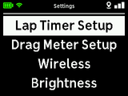
- Lap Timer Setup - configurations of the Lap Timer feature. See below
- Drag Meter Setup - configurations of the Drag Meter feature. See below
- Wireless - enable/disable the built-in wireless module and change access password
- Brightness - adjust RaceBox display brightness
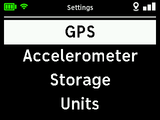
- GPS - view GPS status and switch between external and internal antenna
- Accelerometer - calibrate the built-in accelerometer to compensate for mounting angle
- Storage - view storage status, erase sessions
- Units - select the default units of RaceBox - switch between metric and imperial
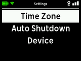
- Time Zone - configure RaceBox time zone
- Auto Shutdown - configure auto shutdown delay
- Device - general device information and reset to factory defaults
Lap Timer Setup
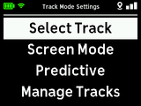
- Select Track - select the track and configuration you are on. Same as the Lap Timer Track Select Screen.
- Screen Mode - select the current display mode of the Lap Time Race Screen. See below
- Predictive - manage the Lap Timer Predictive mode reference. See below
- Manage Tracks - list the tracks in RaceBox memory, delete them, set names for custom tracks. See below
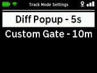
- Diff Popup - adjust how long the sector/lap time popups remain on screen. Press the right arrow button to toggle between 3, 5 and 7 seconds
- Custom Gate - adjust the width of the start/finish and split lines for custom tracks. Press the right arrow button to toggle between 4m, 6m, 8m, 10m and 20m.
Lap Timer Setup - Screen Mode
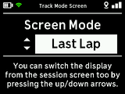
Use the up/down arrow buttons to choose between Best Lap, Last Lap and Predictive. You can also change mode from the Lap Timer Race Screen.
Read more about the Lap Timer Display mode
Lap Timer Setup - Predictive
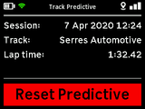
Lap Timer Predictive Setup presents you with information about the currently stored reference lap that will be used for predictive lap times.
If you change the track/configuration you are driving on RaceBox will automatically record new reference and erase the existing one.
If you share RaceBox with other drivers that have different driving line or just place significantly faster lap times then the predictive algorithms will pick their laps as reference. In that case you may want reset the learned lap. To do that just press the right arrow button when on this screen and confirm erase. RaceBox will automatically learn a new reference lap the next time you are on the track.
Lap Timer Setup - Manage Tracks
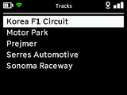
The Manage Tracks menu allows you to view and manage the tracks in the RaceBox internal memory.
Pressing the right arrow button when a track is selected will present you with additional information and option to delete it. Note that deleting a track does not delete the sessions recorded on it.
From this menu you can also add names for a custom track created via RaceBox.
You can also upload, create and manage the tracks on your RaceBox via the smartphone application.
Drag Meter Setup
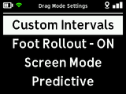
- Custom Intervals - configure your own disciplines to measure in Drag Meter mode. See below
- Foot Rollout - press the right arrow button to enable/disable 1ft rollout.
- Screen Mode - switch Drag Race Screen between normal and predictive mode. See below
- Predictive - preview and erase the predictive mode reference run. See below
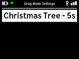
Christmas Tree - configure the duration of the Drag Christmas Tree. Press the right arrow button to toggle between 3, 5 and 7 seconds.
Drag Meter - Custom Intervals
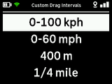
You can configure up to four disciplines (intervals) to measure in Drag Meter Custom mode. Select one and press the right arrow button to adjust it.
You can time your drag runs for the selected disciplines by selecting Custom Mode in the Drag Mode Select Screen.
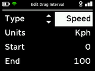
Use the right arrow button to start editing a parameter of the discipline. Use the up/down arrow buttons to adjust its value. Once you are done press the left or right arrow buttons to stop editing it.
Each discipline is configured individually - you can select whether you want to time distance or speed runs, units and so on.
RaceBox supports timing distance runs in feet, meters and miles, up to 10 miles. Speed runs can be measured in kilometers per hour or miles per hour, up to 500 mph.
Drag Meter Setup - Screen Mode
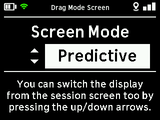
Use the up/down arrow buttons to toggle between normal and predictive display mode. You can also change the display while in the Drag Race Screen.
Read more about the Drag Meter Display mode.
Drag Meter Setup - Predictive
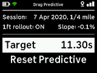
Drag Meter Predictive Setup presents you with information about the currently stored reference run, including when it was recorded, if 1ft rollout was enabled, what the slope is, etc.
You can configure a target time for your distance discipline. Move the cursor to the Target option and press the right arrow to edit it. Use the up/down arrow buttons to adjust the value. You can also set it to None to disable that feature. Refer to the Drag Meter User Manual for information how that affects its operation.
If the reference run is with very different acceleration curve (e.g. recorded with different vehicle, on a steep slope, etc) it is recommended to reset the reference run for best results. Select the Reset Predictive option, press the right arrow button and confirm.
Wireless
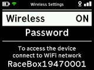
Focus the Wireless menu and press the Right arrow button, toggle it with the up and down arrows. When the built-in wireless is disabled the device will use less battery but you cannot connect it with the smartphone application.
From the Password menu you can view or reset the access password.
Brightness
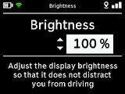
Use the up/down arrow buttons to adjust RaceBox display brightness to match the ambient light. Lower brightness will also extend battery life.
GPS
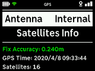
From the GPS menu you can switch between using the built-in GPS antenna or external one. You can also view detailed information about the receiver's status and performance.
Accelerometer
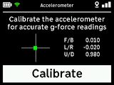
Use the Accelerometer menu to calibrate it so it compensates for mounting angles. Perform this procedure every time you mount the device. This affects only the recorded g-forces in Lap Timer and Drag Meter modes. Timing and positioning accuracy are not affected by calibration.
Storage
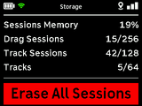
The Storage menu provides information about the internal storage capacity - number of sessions, number of tracks, free memory and so on. Press the right arrow button and confirm if you want to erase all sessions and free up space. Make sure to download them with the smartphone application first.
Units
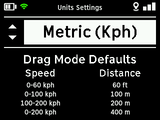
Use the up/down arrows to switch RaceBox between metric and imperial units. This affects the displayed speed in both Drag Meter and Lap Timer as well as the default Distance and Speed disciplines for the Drag Meter.
Time Zone
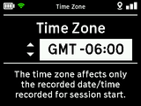
Use the up/down arrows to adjust the time zone in 15 minute steps. This affects the date/time of sessions start for both Lap Timer and Drag meter as well as the wall clock on the main menu.
Auto Shutdown
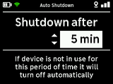
If the device is not in use for some time it will automatically turn off. Use the up/down arrows to configure that delay in one minute steps up to 10 minutes. You can also disable it completely, but you have to make sure to manually turn it off when not in use so it does not drain its battery.